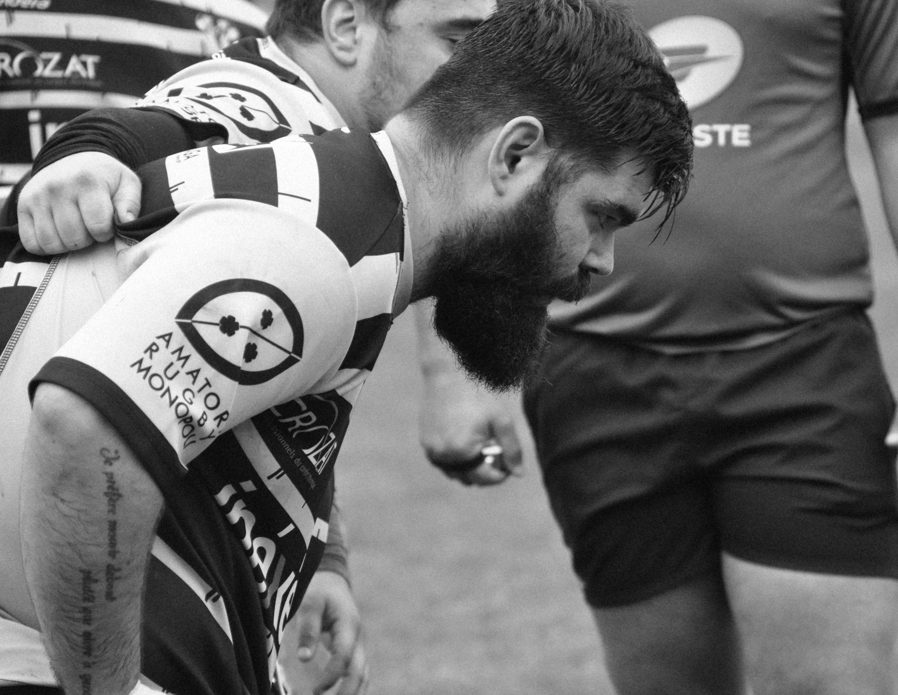
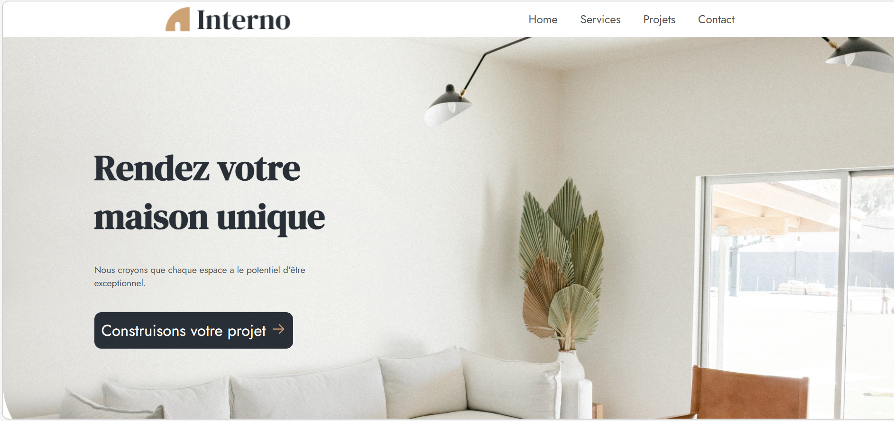
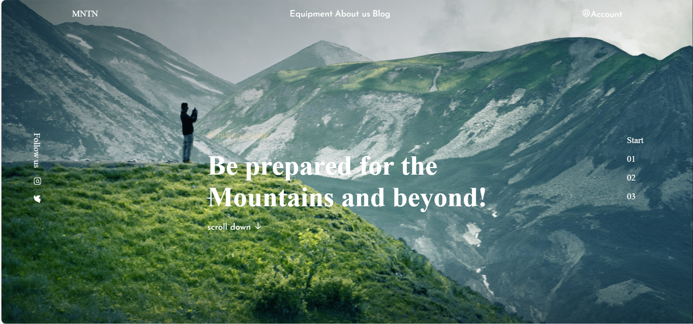
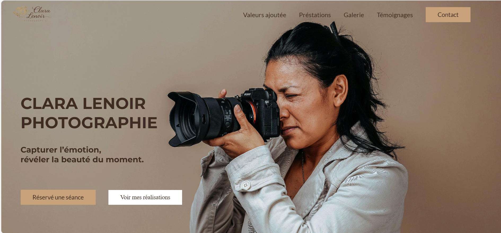
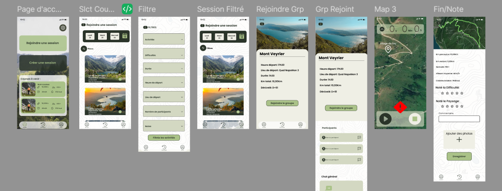
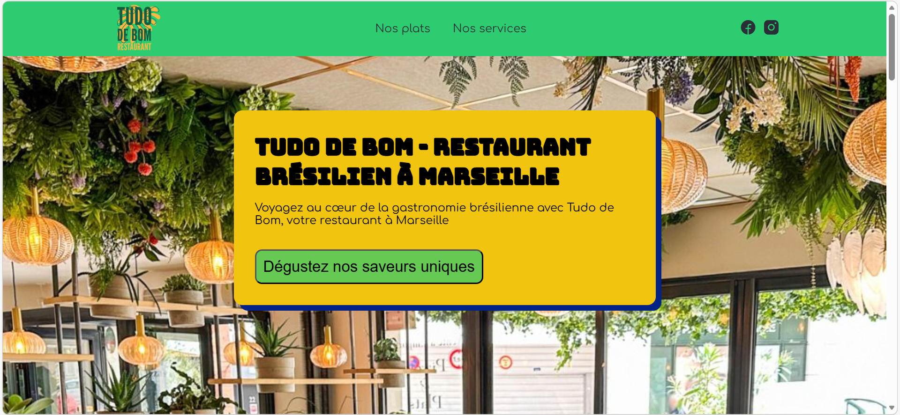
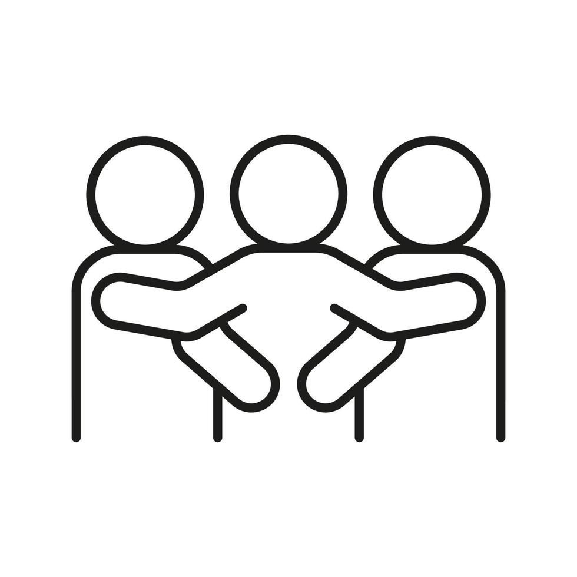
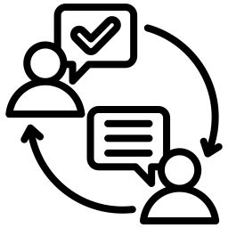

Bonjour, moi c'est Antonin !
Jeune développeur qui rêve grand
!
Entre mêlées et lignes de code, une même logique: progresser ensemble pour atteindre l'objectif.

Mes Projets
Projet Interno
Projet réalisé durant la formation La Toile lors d'un exercice pour s'entrainer sur la manipulation des flexbox.

Projet MNTN-Intégration
Projet réalisé durant la formation La Toile lors d'un exercice pour s'entrainer sur les positions.

Projet d'évaluations HTML/CSS
Première évaluation après trois semaines de formation,
le but était
d'utiliser tout ce que
l'on avait appris durant ces trois semaines sur HTML/CSS.


Projet Tudo De Bom
Deuxième évaluation après trois semaines de JavaScript, le but était d'utiliser tout ce que l'on avait appris durant ces trois semaines sur JavaScript

Mon Parcours
Livreur / Monteur de mobilier de bureau (2018–2019)
Cette expérience m’a permis de développer des compétences transversales essentielles :
- Gestion des priorités et organisation
- Autonomie et résolution de problèmes
- Travail d’équipe et communication client
- Rigueur opérationnelle et adaptabilité
- Planification et gestion logistique
Streamer – Twitch (2019 – 2020)
Passionné de jeux vidéo, j’ai entrepris une activité de streaming sur Twitch, me permettant de développer certaines compétences:
- Planification et maintien d’une régularité de diffusion
- Gestion autonome d’un projet digital
- Organisation du temps et discipline personnelle
- Communication et interaction avec une communauté
- Capacité d’adaptation et apprentissage continu
Agent de maintenance de matériels incendie (Nov. 2020 – Juil. 2026)
Cette expérience m’a permis de développer de nouvelles compétences:
- Maintenance et contrôle d’équipements techniques
- Application stricte des normes de sécurité
- Organisation des journées selon les clients et chantiers
- Autonomie, résolution de problèmes et adaptabilité
- Gestion des priorités et suivi opérationnel
Formation La Toile – EM Lyon (Fév. 2026 – Juil. 2026)
Objectif reconversion professionnelle, j’ai intégré la formation La Toile afin d’acquérir les bases du développement et la conception d’interfaces.
- Apprentissage du HTML, CSS et JavaScript
- Découverte des principes UI/UX Design
- Maquettage et prototypage avec Figma
- Développement de projets web et logique de programmation
- résolution de problèmes et de l’apprentissage technique
Soft-Skills

Esprit d'équipe !

Sens relationnel
Curiosité !
Compétiteur !